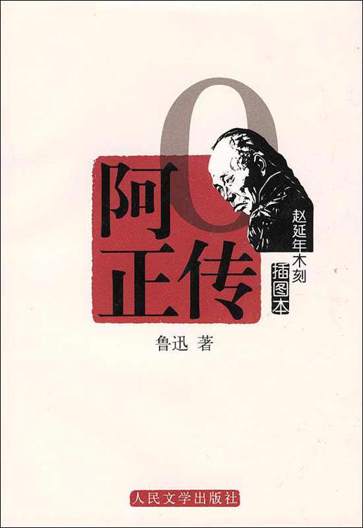

阿Q正传
鲁迅
简介
《阿Q正传》：在一般意义上讲，中篇小说通常是就小说的篇幅而言，它是介于长篇小说和短篇小说之间的一种体裁。对于中文作品来说，人们一般将三到十万字左右的小说叫作中篇小说。在英文中，长篇小说称为novel，短篇小说为short story，各自拥有独立的称谓，而中篇则是novelette，是一个在词义上具有依附性的衍生词，字面意义可以理解为小于长篇的小说。这表明中篇小说本身还是一个相对模糊的概念。在中国，现代意义上中篇小说概念的形成是伴随着其创作的产生而逐渐清晰的。鲁迅先生创作于1921年的《阿Q正传》，是中国现代意义上中篇小说的开山之作。这之后陆续出现了沈从文的《边城》，老舍的《月牙儿》、《我这一辈子》，萧红的《生死场》，巴金的《憩园》等优秀的中篇作品。这种影响一直接续不断，特别是改革开放三十年间，中篇小说更是进入了一个空前繁荣的发展时期，以致有研究者认为，中篇小说代表了近三十年文学的高端水平。
第一章 序
第一章序
我要给阿Ｑ做正传，已经不止一两年了。但一面要做，一面又往回想，这足见我不是一个“立言”⑵的人，因为从来不朽之笔，须传不朽之人，于是人以文传，文以人传——究竟谁靠谁传，渐渐的不甚了然起来，而终于归接到传阿Ｑ，仿佛思想里有鬼似的。
然而要做这一篇速朽的文章，才下笔，便感到万分的困难了。第一是文章的名目。孔子曰，“名不正则言不顺”⑶。这原是应该极注意的。传的名目很繁多：列传，自传，内传⑷，外传，别传，家传，小传……，而可惜都不合。“列传”么，这一篇并非和许多阔人排在“正史”⑸里；“自传”么，我又并非就是阿Ｑ。说是“外传”，“内传”在那里呢？倘用“内传”，阿Ｑ又决不是神仙。“别传”呢，阿Ｑ实在未曾有大总统上谕宣付国史馆立“本传”⑹——虽说英国正史上并无“博徒列传”，而文豪迭更司⑺也做过《博徒别传》这一部书，但文豪则可，在我辈却不可。其次是“家传”，则我既不知与阿Ｑ是否同宗，也未曾受他子孙的拜托；或“小传”，则阿Ｑ又更无别的“大传”了。总而言之，这一篇也便是“本传”，但从我的文章着想，因为文体卑下，是“引车卖浆者流”所用的话⑻，所以不敢僭称，便从不入三教九流的小说家⑼所谓“闲话休题言归正传”这一句套话里，取出“正传”两个字来，作为名目，即使与古人所撰《书法正传》⑽的“正传”字面上很相混，也顾不得了。
第二，立传的通例，开首大抵该是“某，字某，某地人也”，而我并不知道阿Ｑ姓什么。有一回，他似乎是姓赵，但第二日便模糊了。那是赵太爷的儿子进了秀才的时候，锣声镗镗的报到村里来，阿Ｑ正喝了两碗黄酒，便手舞足蹈的说，这于他也很光采，因为他和赵太爷原来是本家，细细的排起来他还比秀才长三辈呢。其时几个旁听人倒也肃然的有些起敬了。那知道第二天，地保便叫阿Ｑ到赵太爷家里去；太爷一见，满脸溅朱，喝道：“阿Ｑ，你这浑小子！你说我是你的本家么？”
阿Ｑ不开口。
赵太爷愈看愈生气了，抢进几步说：“你敢胡说！我怎么会有你这样的本家？你姓赵么？”
阿Ｑ不开口，想往后退了；赵太爷跳过去，给了他一个嘴巴。
“你怎么会姓赵！——你那里配姓赵！”
阿Ｑ并没有抗辩他确凿姓赵，只用手摸着左颊，和地保退出去了；外面又被地保训斥了一番，谢了地保二百文酒钱。知道的人都说阿Ｑ太荒唐，自己去招打；他大约未必姓赵，即使真姓赵，有赵太爷在这里，也不该如此胡说的。此后便再没有人提起他的氏族来，所以我终于不知道阿Ｑ究竟什么姓。
第三，我又不知道阿Ｑ的名字是怎么写的。他活着的时候，人都叫他阿Ｑｕｅｉ，死了以后，便没有一个人再叫阿Ｑｕｅｉ了，那里还会有“著之竹帛”⑾的事。若论“著之竹帛”，这篇文章要算第一次，所以先遇着了这第一个难关。我曾仔细想：阿Ｑｕｅｉ，阿桂还是阿贵呢？倘使他号月亭，或者在八月间做过生日，那一定是阿桂了；而他既没有号——也许有号，只是没有人知道他，——又未尝散过生日征文的帖子：写作阿桂，是武断的。又倘使他有一位老兄或令弟叫阿富，那一定是阿贵了；而他又只是一个人：写作阿贵，也没有佐证的。其余音Ｑｕｅｉ的偏僻字样，更加凑不上了。先前，我也曾问过赵太爷的儿子茂才⑿先生，谁料博雅如此公，竟也茫然，但据结论说，是因为陈独秀办了《新青年》提倡洋字⒀，所以国粹沦亡，无可查考了。我的最后的手段，只有托一个同乡去查阿Ｑ犯事的案卷，八个月之后才有回信，说案卷里并无与阿Ｑｕｅｉ的声音相近的人。我虽不知道是真没有，还是没有查，然而也再没有别的方法了。生怕注音字母还未通行，只好用了“洋字”，照英国流行的拼法写他为阿Ｑｕｅｉ，略作阿Ｑ。这近于盲从《新青年》，自己也很抱歉，但茂才公尚且不知，我还有什么好办法呢。
第四，是阿Ｑ的籍贯了。倘他姓赵，则据现在好称郡望的老例，可以照《郡名百家姓》⒁上的注解，说是“陇西天水人也”，但可惜这姓是不甚可靠的，因此籍贯也就有些决不定。他虽然多住未庄，然而也常常宿在别处，不能说是未庄人，即使说是“未庄人也”，也仍然有乖史法的。
我所聊以自慰的，是还有一个“阿”字非常正确，绝无附会假借的缺点，颇可以就正于通人。至于其余，却都非浅学所能穿凿，只希望有“历史癖与考据癖”的胡适之⒂先生的门人们，将来或者能够寻出许多新端绪来，但是我这《阿Ｑ正传》到那时却又怕早经消灭了。
以上可以算是序。